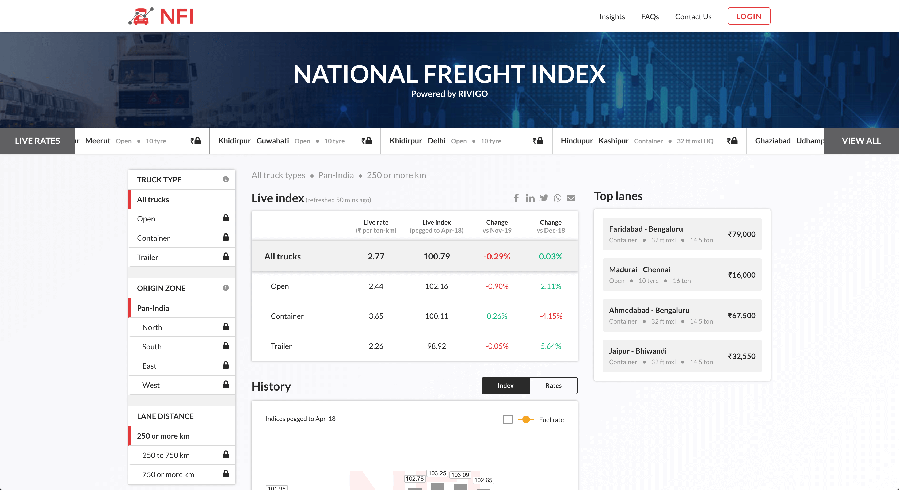
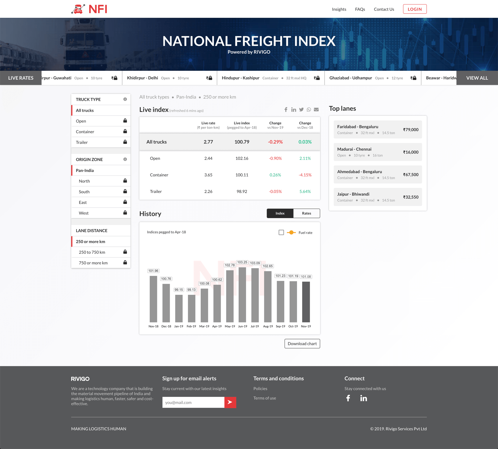
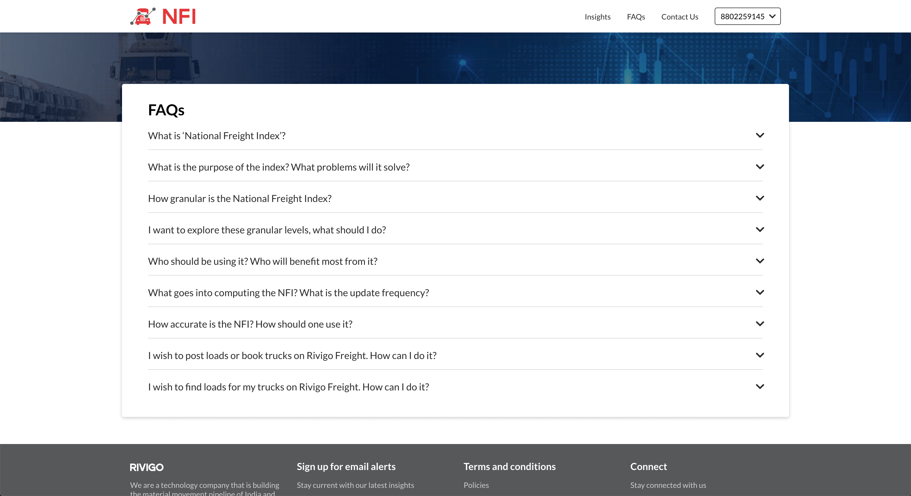
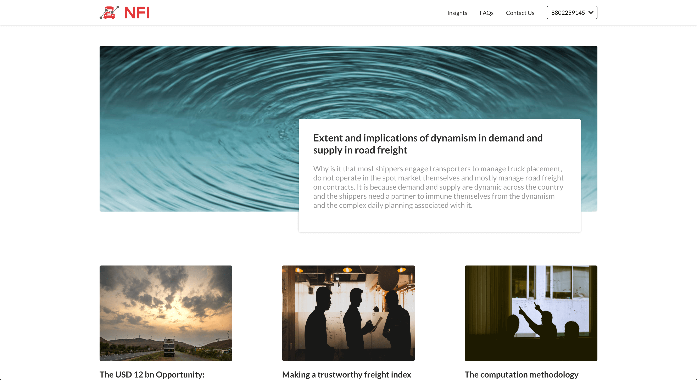

Project Overview
The National Freight Index (NFI) is a comprehensive barometer of the road freight spot market in India. NFI offers an aggregated picture of both live rates and historical trends of spot price movements in the road freight industry. The index is represented in two main forms, firstly in terms of actual freight rates condensed to INR per ton-km and secondly in terms of relative movement with respect to the base month of April 2018. Rivigo Freight has been solving pressing issues in the traditionally broker led road freight marketplace of the country. Until now there has been no aggregate measure of the movement of spot prices in the road freight market in the country. Through National Freight Index (NFI) we solve this problem.
Role
User Experience, Web and Mobile Development, Interaction, Prototyping & User Interface Design
Key Features
- Bringing price transparency to fleet owners and transporters through the Rivigo Rate Exchange.
- Providing supplier quality assurance through our algorithmic supplier quality engine
- Offering a digital, hassle-free experience to users of our platform to manage their operations with features like cashless fuel filling, easy FastTag recharge
Project Phases
1. Research and Discovery:
Goals
- Understand the target audience, including their needs, pain points, and goals.
- Identify industry standards and best practices in data visualization for financial and logistics contexts.
- User interviews with logistics managers, freight carriers, and supply chain professionals.
Methods
- User interviews with logistics managers, freight carriers, and supply chain professionals.
Key Insights
- Users need a platform that offers real-time updates on spot price movements to make timely decisions.
- Historical trends are crucial for making strategic decisions and understanding market patterns.
- Users desire clear visualizations that are easy to interpret and can help them identify patterns quickly.
2. Information Architecture and Wireframing:
Goals
- Organize the platform's structure to support both live rates and historical data access.
- Develop initial wireframes to outline the layout and flow of key features.
Approach
- Design a dashboard-style interface for the landing page, highlighting the most critical information upfront.
- Sketch out wireframes for key information like the live rates overview, historical data analysis, and user profile.
3. Prototype Design:
Goals
- Transform wireframes into interactive prototypes to visualize the user journey.
- Incorporate branding elements and design a cohesive interface that reflects the platform's identity.
Approach
- Use a user-friendly design tool to create interactive prototypes with clickable links and basic interactions.
- Focus on creating a clean and intuitive interface that highlights data visualization elements.
Final Layout : Landing Page

Final Layout : Other screens


4. User Testing:
Goals
- Validate the prototype with target users to identify usability issues and gather feedback.
- Ensure that the platform meets user needs and expectations.
Methods
- Conduct usability testing sessions with a diverse group of logistics professionals.
- Encourage users to perform specific tasks, such as checking live rates, exploring historical trends, and setting up alerts.
Key Findings
- Users appreciated the dashboard layout that provides an overview of both live rates and historical data.
5. Visual Design:
Goals
- Develop a visually appealing interface that aligns with the platform's branding.
- Apply color schemes, typography, and visual elements that enhance the user experience.
Approach
- Use a consistent color palette that reflects the industry's professionalism and reliability.
- Choose fonts that are easy to read, ensuring a comfortable reading experience for users.
6. Development and Launch:
Goals
- Translate the final design into a functional platform.
- Test the platform rigorously to ensure smooth performance and data accuracy.
Approach
- Collaborate with front-end and back-end developers to bring the design to life.
- Conduct thorough testing across different devices and browsers to catch any bugs or performance issues.
Conclusion
Through a user-centered approach, the Freight Index platform was successfully designed to provide logistics professionals with an aggregated view of live rates and historical trends in the road freight industry. The platform's intuitive dashboard layout, clear data visualizations, and easy-to-access features empower users to make informed decisions and optimize their supply chain operations. User feedback and iterative design were key to refining the platform's usability and ensuring a seamless user experience.
Back To Projects